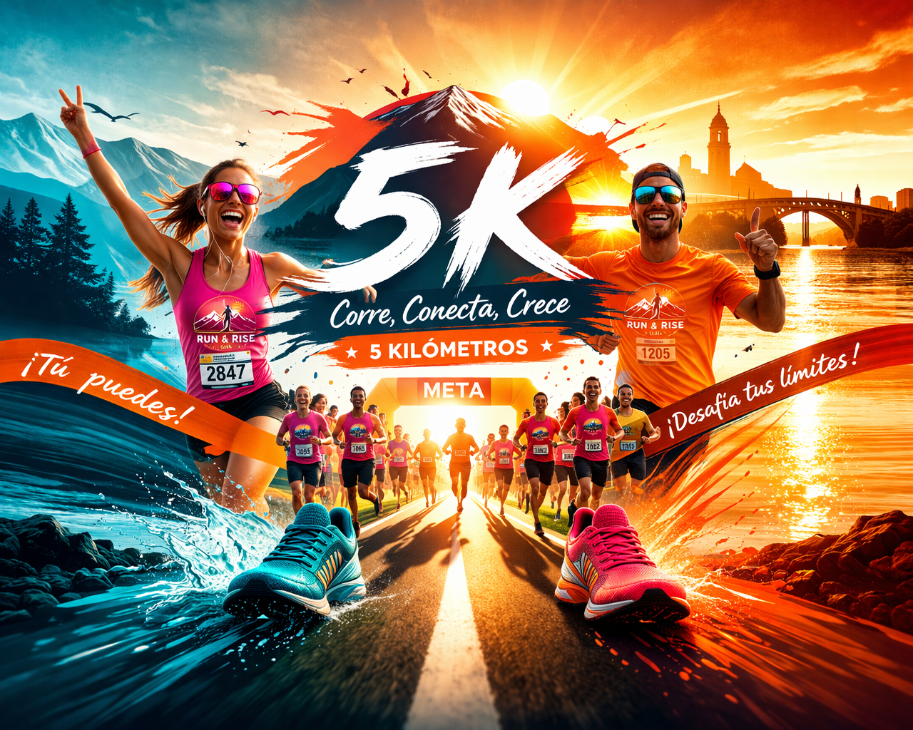

Prepárate para la primera gran carrera festiva que organizamos. Dorsal, bolsa del corredor y mucha diversión.

La Run & Rise 5K es mucho más que medir tu velocidad. Es nuestra forma de celebrar el atletismo popular. Queremos que sea el debut perfecto para quien jamás ha competido, y al mismo tiempo una fiesta donde los corredores más experimentados puedan romper sus marcas o disfrutar del ambiente.
Habrá cajones de salida organizados por ritmos para garantizar la seguridad de todos. Con tu inscripción te llevarás la exclusiva bolsa del corredor, que incluye: camiseta técnica de manga corta edición limitada, dorsal con chip, barrita energética y una medalla finisher (¡sí, por 5K también mereces medalla!).
Además, en la meta nos esperará un speaker, música en directo y foodtrucks para recuperar de la mejor manera. Plazas muy limitadas, ¡no te quedes sin la tuya!